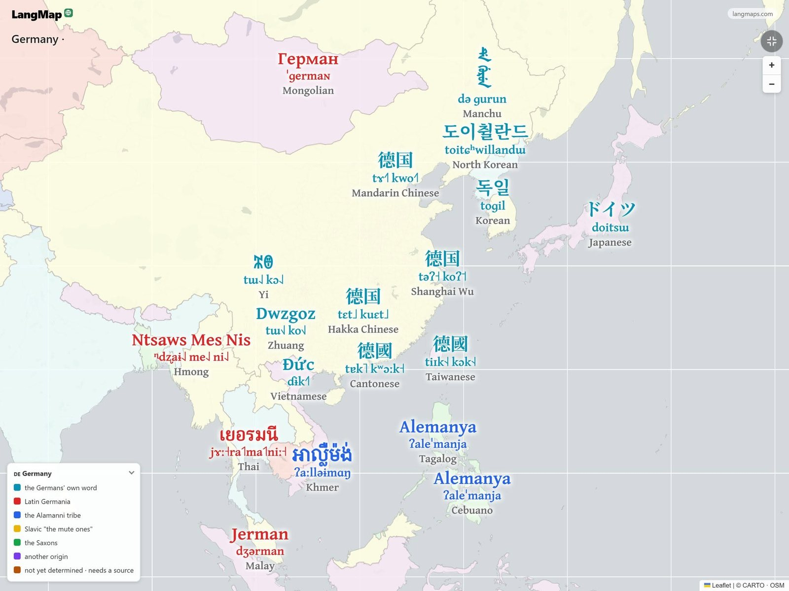

Why does Asia have so many different names for Germany?
- Japan says Doitsu. China says Déguó. South Korea says Dogil.
- Same country, so why are the names so different?
- Because two different Chinese characters, 獨 and 德, took two different routes across East Asia.

Contents
One country, many names
Germany is one of those countries whose name changes dramatically as you travel around the world.
Germans themselves say:
Deutschland
English has Germany.
French has Allemagne.
Polish has Niemcy.
Finnish has Saksa.
But Asia is where the story gets especially interesting.
Japan: ドイツ
Japanese calls Germany:
ドイツ (Doitsu)
Historically, it was also written:
獨逸 / 独逸
The characters were chosen mainly for their sound, not their meaning.
獨 = alone
逸 = escape, excel
Nobody was trying to call Germany "solitary escape."
The characters were simply being used to write the sound Doitsu.
Today, 獨逸 has mostly disappeared from ordinary Japanese.
But the first character survives as the abbreviation for Germany:
独 = Germany
For example:
日独関係 = Japan-Germany relations
独文学 = German literature
China chose a different character
Chinese calls Germany:
德国 / 德國 (Déguó)
The longer form is:
德意志 (Déyìzhì)
But look at the first character.
Japan used 獨.
China used 德.
Two completely different characters.
Yet both were chosen to represent roughly the beginning of the same foreign name.
Japan: 獨逸 → Doitsu
China: 德意志 → Déyìzhì
And that tiny difference would travel farther.
South Korea kept 獨逸
South Korea calls Germany:
독일 (Dogil)
This comes from 獨逸, read with Sino-Korean pronunciations:
獨 → 독 dok
逸 → 일 il
獨逸 → 독일
Japanese Doitsu and Korean Dogil look very different today.
But they are connected through the same two characters.
And then something unexpected happens.
Cross the border into North Korea, and Germany becomes:
도이췰란드 (Doichwillandeu)
Much closer to Deutschland.
Same Korean language.
Same country being named.
But a completely different solution.
Vietnam kept 德
Vietnamese calls Germany:
Đức
Just one syllable.
But behind it is the same character used in Chinese: 德.
So the Chinese route became:
德國 → Đức
Now the split becomes visible.
One route: 獨逸 → Japanese Doitsu → Korean Dogil
Another route: 德國 → Chinese Déguó → Vietnamese Đức
Same German name.
Two different Chinese characters.
Two different journeys across East Asia.
And Asia keeps changing the answer
Move farther across Asia and the name changes again.
Mongolian: Герман (German)
Thai: เยอรมนี (yoeramani)
Indonesian: Jerman
Malay: Jerman
Tagalog: Alemanya
Khmer: អាល្លឺម៉ង់ (ʼaalləɨmɑng)
Tagalog and Khmer are especially interesting.
Both belong to the Alman / Allemagne family.
But they arrived by different routes.
Tagalog Alemanya came through Spanish Alemania.
Khmer អាល្លឺម៉ង់ came through French allemand.
So even inside Southeast Asia, several different European names for Germany ended up side by side:
Deutsch
Germania / German
Allemagne / Alman
And East Asia added one more layer:
turning foreign sounds into Chinese characters.
獨 or 德?
This may be the most interesting part.
A foreign name arrived in East Asia.
Someone had to decide:
which Chinese character sounds close enough?
Japan ended up with 獨.
China ended up with 德.
The meanings of the characters were almost irrelevant.
But the choices lasted.
From 獨 came 독일, still used every day in South Korea.
From 德 came Đức, still used every day in Vietnam.
And North Korea went in another direction again: 도이췰란드, back toward Deutschland itself.
One country.
One German name.
Several completely different answers.
Sometimes a country name is not just a name.
It is a fossil of the route by which that country entered another language.